Here are a few quick steps to get your environment ready for today's exercises.
Step 1. Turn on Metric Ingest in the Dynatrace UI
- Navigate to Settings > Monitoring > Monitored Technologies
- Scroll down to the bottom of the list
- Turn on Dynatrace OneAgent StatsD, Pipe, HTTP Metric API
Step 2. Restart Telegraf
- Navigate to the terminal in DTU
bash
(ubuntuvm)$ sudo systemctl restart telegraf
### Step 3. Clone Git Hub Repo - In the DTU terminalbash
(ubuntuvm)$ git clone https://github.com/JasonOstroski/Perform2021-ActionableInfraScripts.git
Step 4. Set up a browser monitor in the Dynatrace UI
- Navigate to Synthetics > Create a Synthetic Monitor
- Create a browser monitor
- URL is the Public IP address on port 8080
- Ex: http://12.345.67.89:8080
- Find the Public IP in the Environments tab in DTU
- Monitor Name: EasyTravel Home
- Leave all other defaults and select 3 locations
Exercise Prep: CPU Temp
Let's generate some data for some later exercises
Kick off the CPU Temp Script
- In the DTU Terminal run the following
(ubuntuvm)$ cd Perform2021-ActionableInfraScripts
(ubuntuvm)$ python3 cputemp.py
Metric Browser
- Search for Metric by name
- Example: Telegraf.mem.used_percent
- Favorite the Metric
- Which dimensions are available?
- Create Chart and pin into a new dashboard
- Give the dashboard a meaningful name
- Ex: Infrastructure Overview
- Tile Name: Memory Utilization 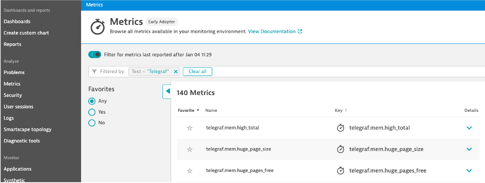
Metric Browser vs Explorer
- Metric Explorer
- Create Custom Chart > Try it out
- Search for the CPU System Usage Telegraf Metric
- Pin the CPU System Usage Telegraf Metric to the dashboard
- Which way was easier, browser or explorer?
- Why would you choose one over the other?

- Why would you choose one over the other?
Thresholds
Disk Used Threshold Chart
- Chart the Telegraf Disk Used Percent Metric in the Explorer
- Aggregation: Average
- Thresholds: Green: Blank, Yellow: 40, Red: 75
- Chart Mode: Column
- Pin to dashboard
- Tile name: Disk Used % 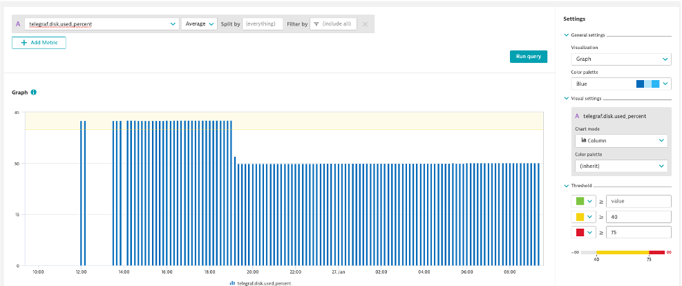

- Tile name: Disk Used % 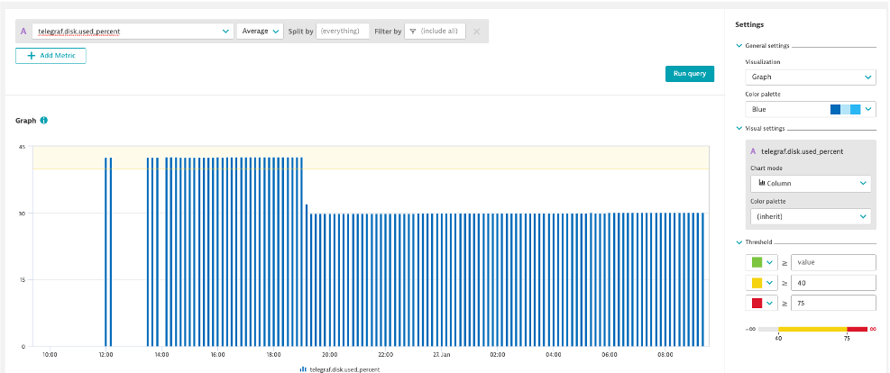
Top List with Thresholds: EC2 CPU
- Create a Top List with EC2 CPU Usage %
- Aggregation: Average
- Split by: de.entity.ec2_instance
- Fold Transformation: Last
- Thresholds: Green: 0, Yellow: 40, Red: 60
- Pin to dashboard


Optional: Top List with Threshold: Process CPU
- Create a Top List with Process CPU Usage
- Aggregation: Average
- Split by: Process
- Fold Transformation: Last
- Thresholds: Green: 0, Yellow: 5, Red: 20
- Pin to dashboard
 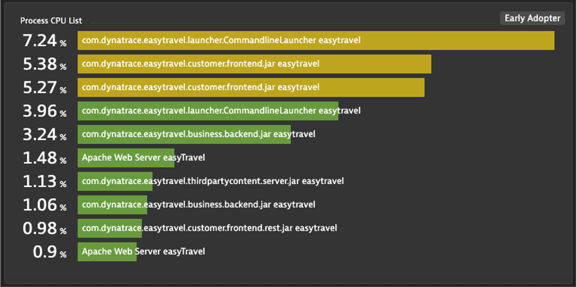
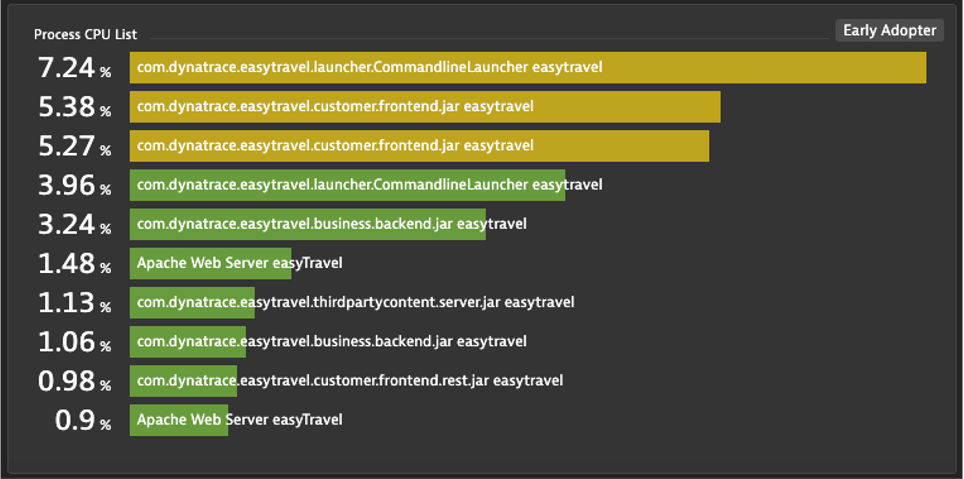
Splitting and Filtering
Splitting
- Create an area chart with Process Network Load
- Metric: builtin:tech.generic.network.load
- Aggregation: Average
- Split by: Process
- Filter: Only show EasyTravel Processes and Nginx
- Pin to dashboard


CPU Temp Split
- One of out servers is running high on CPU temp and we want to review the CPU temp vs usage
- Create an area chart with CPU System Usage
- Metric: builtin:host.cpu.system
- Aggregation: Average
- Create a line chart with CPU Temp
- This data comes from the script we started a few exercises back
- Metric: cpu.temperature
- Aggregation: Average
- Split by: CPU
- Pin to dashboard
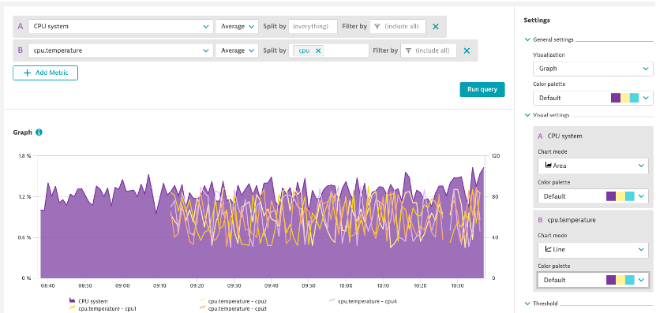

Exercise Prep: Shop Response Time
Stop CPU and start shop response time
- Back in the DTU Terminal
- Stop the cpu temp script with Ctrl + C
- Start the retail shop response time script
(ubuntuvm)$ python3 retailresponsetime.py
Dashboarding
Let's clean up the Infrastructure Overview dashboard
- Add Tags: Infrastructure, Ops
- Favorite the dashboard
- Add Tiles: Host Health, Problems
- Headers: Overview, Shop Performance, Infrastructure Detail
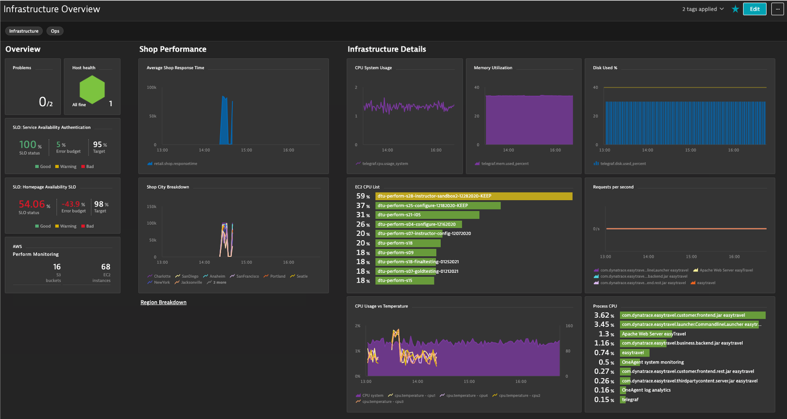
Shop Performance
Create an area chart of average response time
- Metric: retail.shop.responsetime
- Aggregation: Average
- Pin to Infrastructure Overview dashboard
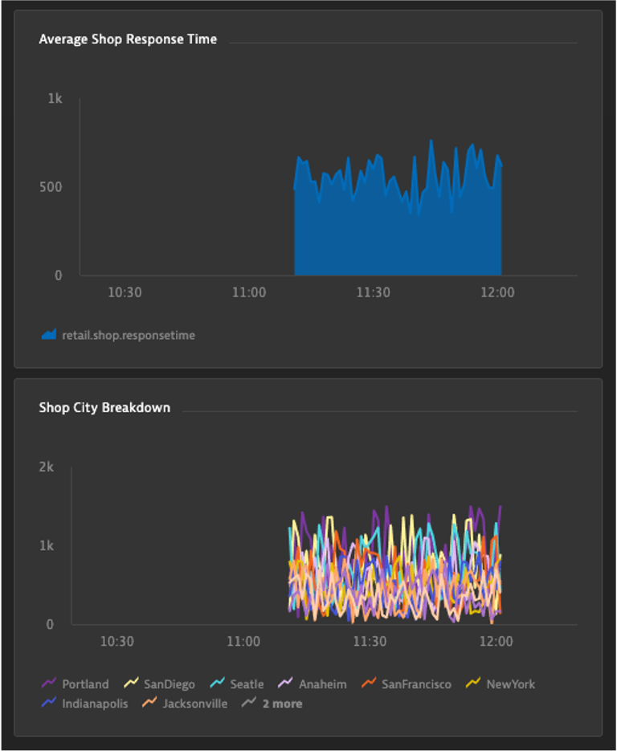
Create a line chart, breaking down the response time by city
- Aggregation: Average
- Split by: city
- Pin to Infrastructure Overview dashboard
Optional Exercise: Shop Performance Dashboard
- Create a 2nd Dashboard called Shop Performance to highlight East vs West Shop Performance
- Track East and West response times in different tiles of the dashboard
- Metric: retail.shop.responsetime
- Aggegration: Average
- Split By: City
- Filter by: Region useast or uswest
- Create a mark down link from the Infrastructure Overview dashboards
- Create a mark down link from the Shop Performance Dashboard back to the Infrastructure Overview dashboard
- Mark down example:
[Region Breakdown](#dashboard;id=4e0089b5-8f38-4e8f-949f-1113acf79f5c) - Mark down back button example:
## [⇦](#dashboard;id=bbbbbbbb-0008-0000-0000-000000000000)
- Where do I get the id values from?
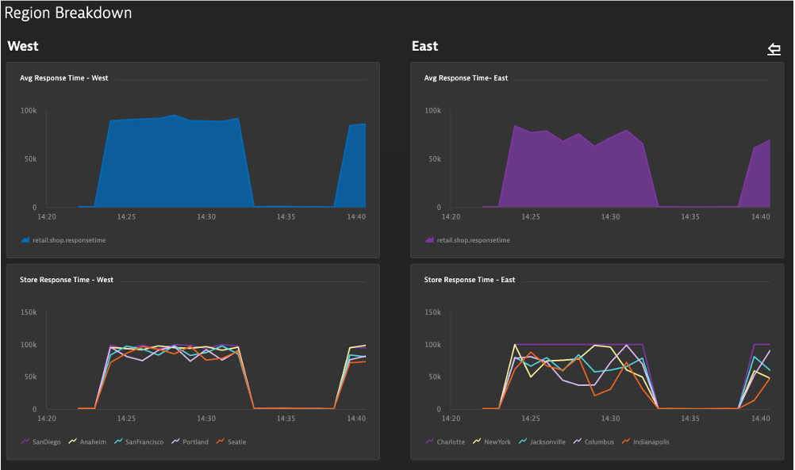
Creating a dimension mananagement zone
- Look at the retail.shop.responsetime metric in the metric browser and gain insights on available data dimensions
Scenario
- You have different IT teams for East and West stores
- Each team only wants to analyze their region's performance
- Create 2 different management zones to cover this
- Add the required management zone rules (Dimensional data rules)
- What happens to the shop tiles in the dashboards when you select the different management zones?
- Explore this in the Metric Explorer too!

Synthetic SLO
Create a synthetic availablity SLO
- Name: Homepage Availability SLO
- Use existing percentage Toggle
- Metric: builtin:synthetic.browser.availability.location.total
- Evaluation Type: Aggregate
- SLO Filter: type("SYNTHETIC_TEST"),entityName("Easytravel Home")
- Target Percentage: 98%
- Warning Percent: 99%
- Timeframe: -1d
- Where do I get Metric Name from?
- Where do I get SLO Filter from?
- Add to Dashboard via SLO page pin icon

Service Availablity SLO
Create a Service Availablity SLO
- Name: Service Availability Authentication
- Count of success metric: builtin:service.errors.server.successCount
- Total count metric: builtin:service.requestCount.server
- Evaluation Type: Aggregate
- SLO Filter: type("SERVICE"), entityId("SERVICE-12345XYZ")
- Where do I get the entityId from?
- Target percentage: 95%
- Warning percentage: 97.5%
- Timeframe: -1d
- Add it to the dashboard from the dashboard editor
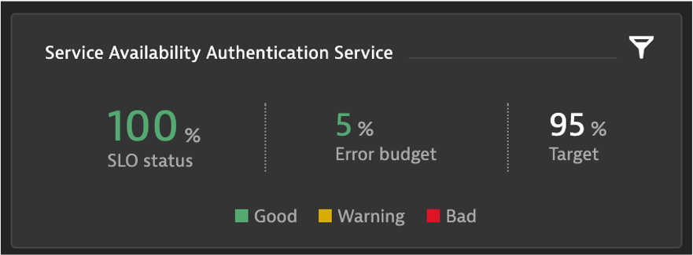
Auto-Adaptive Baselines
Create an auto-adaptive baseline alert for shop response time
- Navigate to Settings > Anomaly Detection > Custom Events for Alerting
- Create an auto-adaptive baseline
- Metric: retail.shop.responsetime
- Aggregation: Average
- City: NewYork
- Entity: None
- Alert of anomalies of 1 time the normal signal fluctuation.
- Metric is above baseline for 1 minute during any 5 minute period
- Name: New York Response Time
- Severity: Slowdown

Static Thresholds
Create a Static Threshold on CPU Temp
- Navigate to Settings > Anomaly Detection > Custom Events for Alerting
- Metric: cpu.temperature
- Aggregation: Average
- Entity: Host
- Static Threshold: 95
- What's the recommended threshold?
- Raise if above threshold for 1 minute during 5 minute period
- Review the Alert Preview
- What happens if you change the threshold to 85?
- Change back to 95 after review
- Title: CPU Temperature
- Severity: Resource
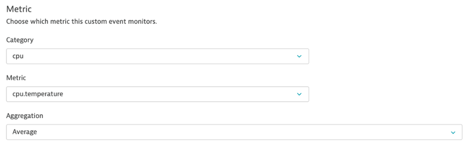
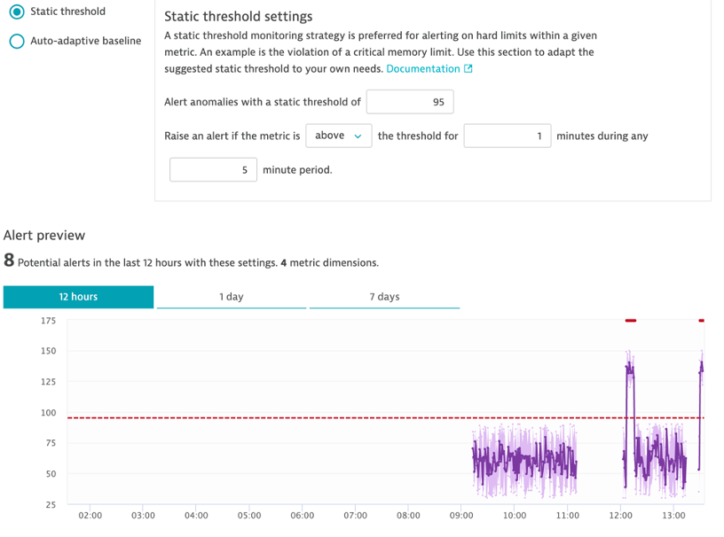
Let's turn up the heat!
- Back in the DTU Terminal
- Stop the retailresponsetime.py script if it's still running (Ctrl + C)
- Start the retail script:
(ubuntuvm)$ python3 cputemp.py HHMM 10
- HHMM is the time you'd like the CPU scenario to start
- Start it a few minutes after the current time
- You can run timedatectl to check current time
- Ex: 1828 is 1:28 PM EST or 18:28 UTC
- 10 is the number of minutes you'd like the scenario to run for
- Wait a few minutes and let's see the problem!
Problem Evaluation
- Review the problem ticket
- Drill into the host and view the events 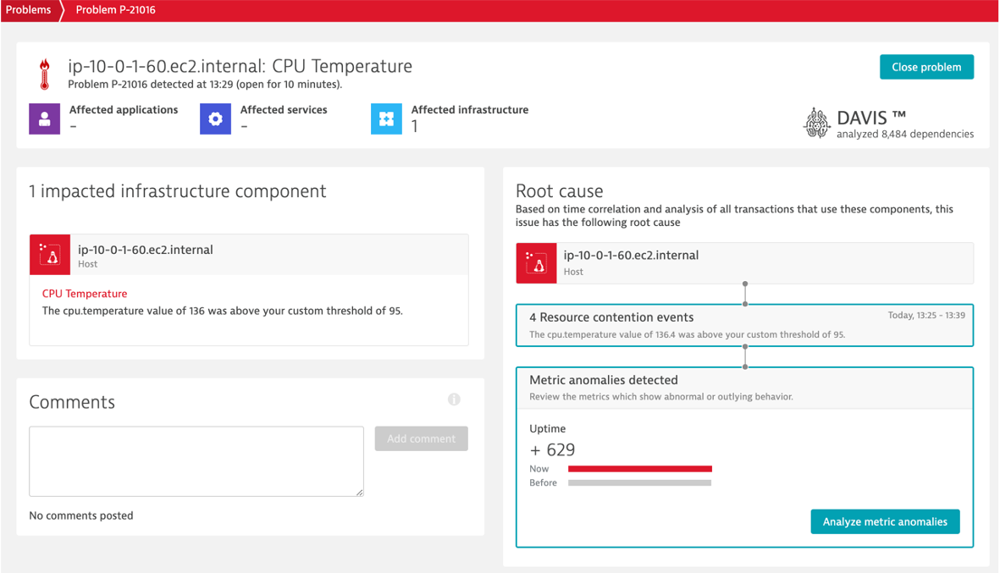
Create an API Token
- Settings>Integration>Dynatrace API
- Generate Token, name it, and turn on:
- API v1 - Access problem and event feed, metrics, and topology, Read Configuration, Write Configuration, User Sessions
- API v2 - Read Metrics
- Copy the value and store in a safe place
- Navigate to the API Explorer: Environment API v2
- Authorize and paste in API Token
- GET /metrics/query
- Metric Selector: telegraf.cpu.usage_user
- View available options and output 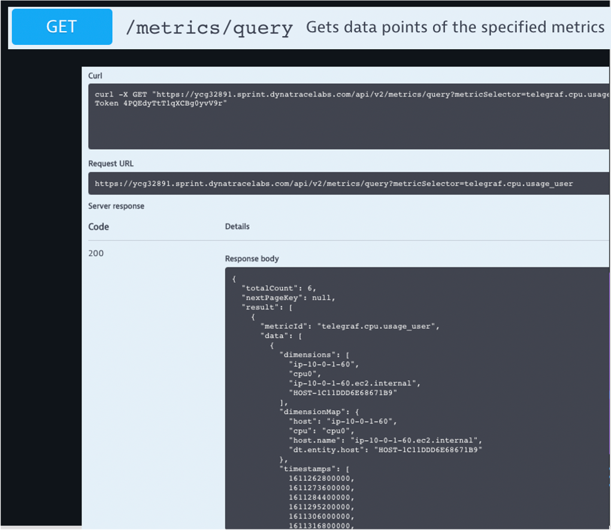
Postman Prep
Create a workspace: PerformHOT2021
- Import from RAW Text
- Open a new browser tab: https://github.com/JasonOstroski/Perform2021-ActionableInfraScripts/
- View Raw of metrics_api_postman_collection.json
- Copy the entire text and paste into Postman
Postman
- Let's get data from the Dynatrace Metric API!
- For the CPU and Disk GET Requests:
- Replace {{URL}} in GET with your Dynatrace Environment
- Be mindful that it's easy to copy and paste https:// and it's already in the GET
- Replace {{API_TOKEN}} in the header with your API Token
- You can also do the replacements via Postman environments
Let's add some more dashboards!
- https://dynatrace.github.io/BizOpsConfigurator
- Enter your tenant URL and API Token
- Deploy Ops, Platform Overview CPU Utilization (no diamond)
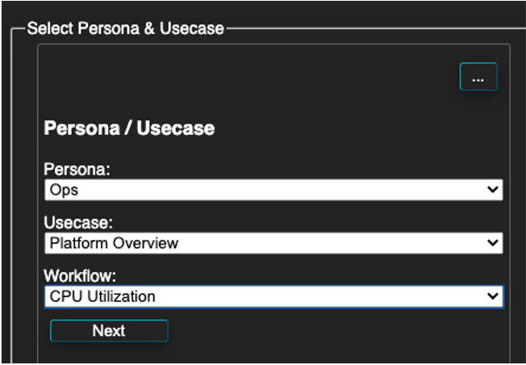
- Deploy Ops, Capacity Management, AWS Overview
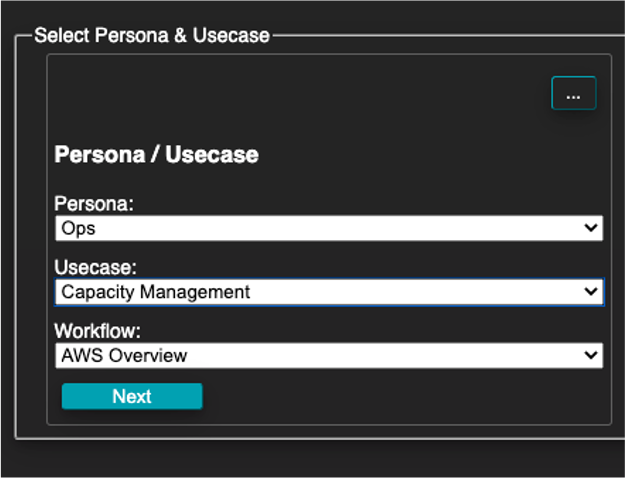
- Deploy Ops, AIOps, Dashboard Basics
- Deploy any other dashboard templates you want to try out.
- Navigate back to the Dynatrace UI and see the new dashboards!
How can I bring my dashboard home with me?
- Go to your Infrastructure Overview dashboard
- Click ... Button in upper right corner > Share > Advanced Settings
- Click dashboard JSON > Download
- This is also available in the Configuration API for managing dashboards at scale